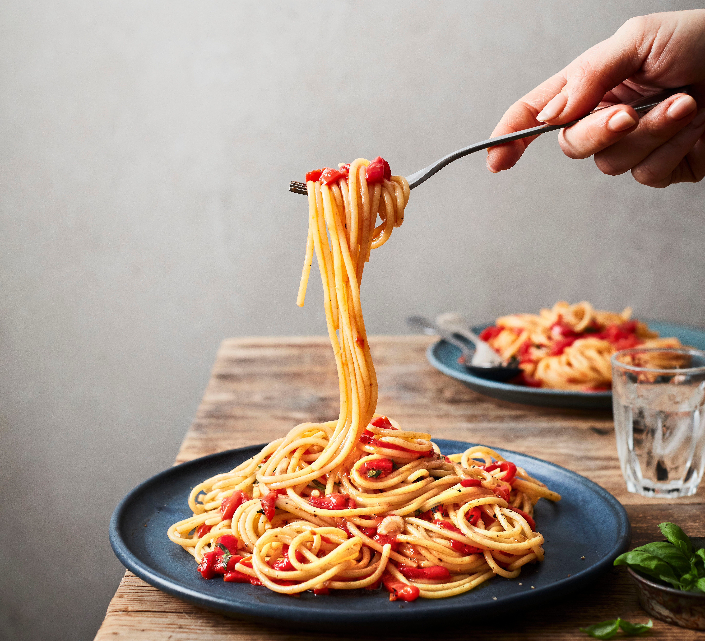

สปาเก็ตตี้ครีมซอสกุ้ง
ส่วนผสม

- เส้นสปาเก็ตตี้
- หมูบด 200 กรัม
- มะเขือเทศ 5 ผล
- หอมใหญ่ สับละเอียด 1/2 หัว
- ซอสพริก 3 ช้อนโต๊ะ
- ซอสมะเขือเทศ 6 ช้อนโต๊ะ
- เกลือป่น
- ออริกาโน
- น้ำมันพืช
วิธีทำ
- ต้มเส้นสปาเก็ตตี้ ในน้ำเดือดที่ผสมน้ำมันพืช และเกลือ ประมาณ 15-20 นาที จากนั้น นำเส้นสปาเก็ตตี้ที่ผ่านการต้มแล้ว ไปนอคในน้ำเย็นจัด พักให้สะเด็ดน้ำ แล้วคลุกเคล้าด้วยน้ำมันพืชเล็กน้อย
- หั่นมะเขือเทศเป็นชิ้นเล็ก จากนั้น นำไปปั่นด้วยเครื่องปั่นจนเป็นเนื้อเดียวกัน นำขึ้นพักไว้
- ตั้งกระทะ ใส่น้ำมัน รอจนร้อน แบ่งหอมหัวใหญ่บดละเอียดมา 1/4 ส่วน ผัดกับน้ำมันจนหอม
- ติมหมูสับลงไป ผัดจนสุก จากนั้น ตามด้วยเนื้อมะเขือเทศปั่น ซอสมะเขือเทศ ซอสพริก หอมหัวใหญ่บดละเอียด 3/4 ส่วน และเกลือป่นเล็กน้อย คลุกเคล้าให้เข้ากัน
- เคี่ยวส่วนผสมจนเริ่มงวด หรือเริ่มหนืดเล็กน้อย ชิมรสชาติ ตามชอบ ปิดเตา
- ต้กสปาเก็ตตี้ใส่จาน เพิ่มกลิ่นด้วยการเหยาะออริกาโน เล็กน้อย พร้อมเสิร์ฟ